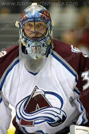

Патрик Руа

Привет! Я Патрик Руа - канадский легендарный голкипер!
На этой страничке я немного повыпендриваюсь похвастаюсь своими достижениями в своей хоккейной карьере!
За время своей карьеры я установил несколько рекордов Национальной Хоккейной Лиги, среди которых:
- Наибольшее количество сыгранных игр в плей-офф НХЛ среди вратарей (247)
- Наибольшее количество «Конн Смайт Трофи» (3)
- Наибольшее количество сыгранных минут в плей-офф НХЛ среди вратарей (15209)
- Наибольшее количество сыгранных минут за карьеру в НХЛ среди вратарей (60235+15209=75444)
- Наибольшее количество побед в плей-офф НХЛ среди вратарей (151)
- Впервые были установлены, но спустя годы, побиты Мартином Бродёром
- Рекорд по количеству сухих матчей в плей-офф — (23)
- Наибольшее количество сыгранных игр в НХЛ среди вратарей (1029)
- Наибольшее количество сыгранных минут в регулярном сезоне НХЛ среди вратарей (60235)